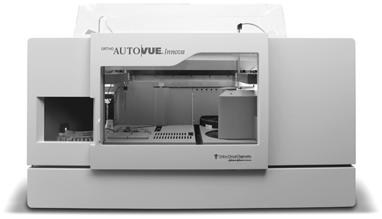

AutoVue®
Analizador de inmunohematología

DESCRIPCIÓN:
Durante más de 10 años, miles de profesionales de inmunohematología de todo el mundo han confiado en el sistema ORTHO Auto Vue® Innova para análisis de rutina o especializados. Basados en la tecnología de aglutinación de columnas. Sistema con resultados increíblemente rápidos precisos y estandarizados. Altamente seguro y confiable.
El sistema proporciona:
• Control automático del estado del sistema
• Acceso aleatorio continuo
• Lectura de cassettes por los dos lados
• Almacenamiento de imágenes a largo plazo
• Tiempo mínimo de centrifugación 5 minutos
• Menos pasos para el proceso total
CARACTERÍSTICAS:
Capacidad de muestras: 42 muestras y 6 posiciones dedicadas a muestras de URGENCIA.
Tipo de muestras: Sangre total, suero o plasma.
Procesamiento: Hasta 420 microcolumnas por hora.
Capacidad de reactivo: 3 bandejas de reactivos para 12 contenedores cada bandeja, para 6 contenedores.
Registro: 0917E2011 SSA
DATOS COMPLEMENTARIOS: Para mayor información, asesoría técnica y pedidos favor de contactarnos en:
HEMOSER, S.A. DE C.V.
Teléfono: (55) 5255-2525
Fax: (55) 5255-3818
e-mail: hemoser@hemoser.com
www.hemoser.com